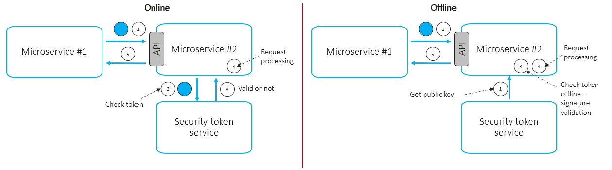

Безопасное взаимодействие сервисов
Сложная программная система объединяет пользовательские интерфейсы, серверные сервисы, базы данных и инфраструктуру. Защита требуется как отдельным компонентам, так и каналам обмена между ними.
Архитектурный контекст
Рассмотрим учебную платформу: запрос пользователя проходит через входной шлюз к прикладному сервису, который обращается к базе данных. Для каждого перехода необходимо определить, кто обращается к ресурсу и какие действия ему разрешены.
Защищённая маршрутизация ограничивает доступные пути обмена, а шифрование защищает передаваемые данные. Аутентификация проверяет личность, а авторизация — разрешения на действия.

Ключевые компоненты
-
Защищённое сетевое взаимодействие.
- Шифрование трафика с помощью TLS.
- Ограничение сетевого доступа между компонентами.
-
Управление доступом.
- Проверка личности пользователей и сервисов.
- Назначение прав по ролям и задачам.
-
Управление секретами.
- Централизованное хранение ключей и паролей.
- Контроль выдачи, замены и отзыва секретов.
-
Аудит.
- Регистрация событий входа и изменения прав.
- Анализ событий для обнаружения подозрительных действий.
Технологический стек и термины учебной модели
- TLS
- Протокол защиты данных при передаче по сети.
- OpenID Connect
- Протокол аутентификации, построенный поверх OAuth 2.0.
- RBAC
- Подход к управлению доступом через роли и назначенные им разрешения.
- Хранилище секретов
- Компонент для контролируемого хранения и выдачи ключей и паролей.
- Аудит безопасности
- Учёт и анализ событий, связанных с доступом к ресурсам системы.
Направления развития
- Уточнять права доступа по принципу минимальных привилегий.
- Автоматизировать замену и отзыв ключей доступа.
- Проверять корректность взаимодействия между сервисами.
- Развивать мониторинг и анализ событий безопасности.
Эти направления раскрывают выбранную тему РТК ИТ через задачи проектирования, сопровождения и развития сложной программной платформы.